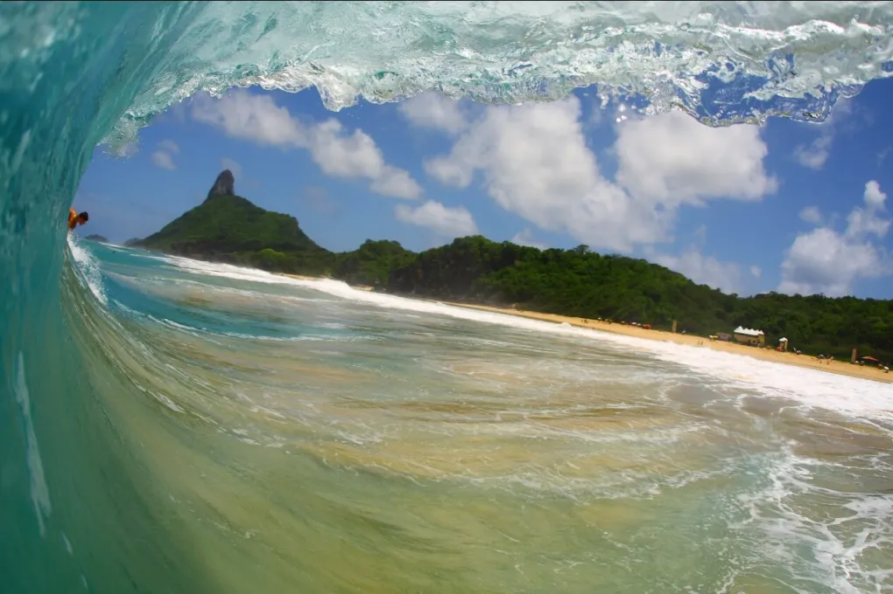
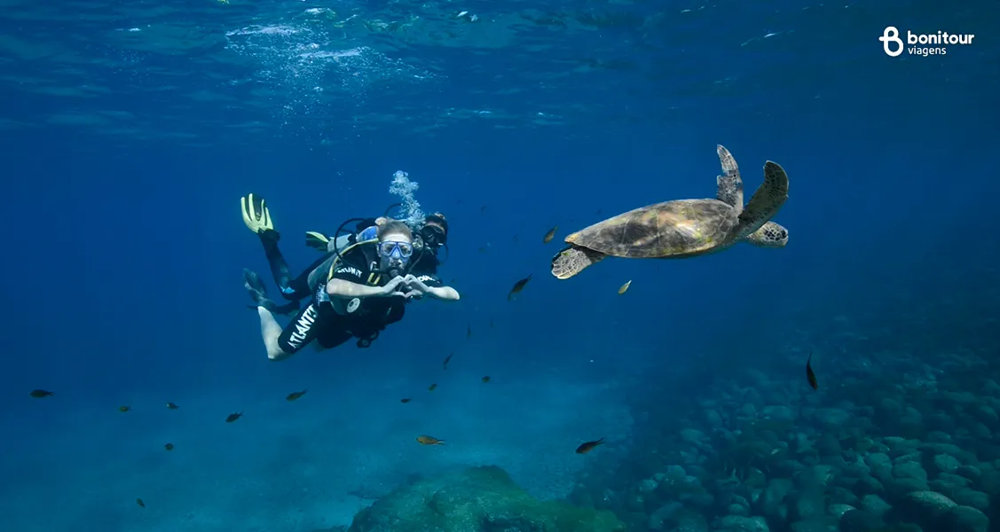

FERNANDO DE NORONHA
|
 |
🐢 Atividades em Fernando de NoronhaFernando de Noronha oferece uma vasta gama de atividades voltadas para o ecoturismo, sempre com foco na conservação da natureza. Entre as principais estão:🏖️ Praias Incríveis Praia do Sancho: considerada por vários anos a praia mais bonita do mundo. Só é acessível por uma escada encravada na rocha ou por barco. Baía dos Porcos: famosa pelas piscinas naturais formadas entre as pedras vulcânicas. Cacimba do Padre: excelente para surfe e com vista privilegiada do icônico Morro Dois Irmãos. Praia do Leão: ideal para contemplação e local de desova de tartarugas marinhas. |
|
🤿 Mergulho e Snorkeling
Noronha é considerada um dos melhores
lugares do mundo para mergulho autônomo
(com cilindro) e livre (snorkeling).
Os principais pontos são:
Baía do Sueste e Atalaia: perfeitos
para ver tartarugas, raias, tubarões-lixa
e cardumes coloridos.
Ilha do Frade e Pedras Secas: locais
de mergulho profundo com rica vida marinha.
|
 |